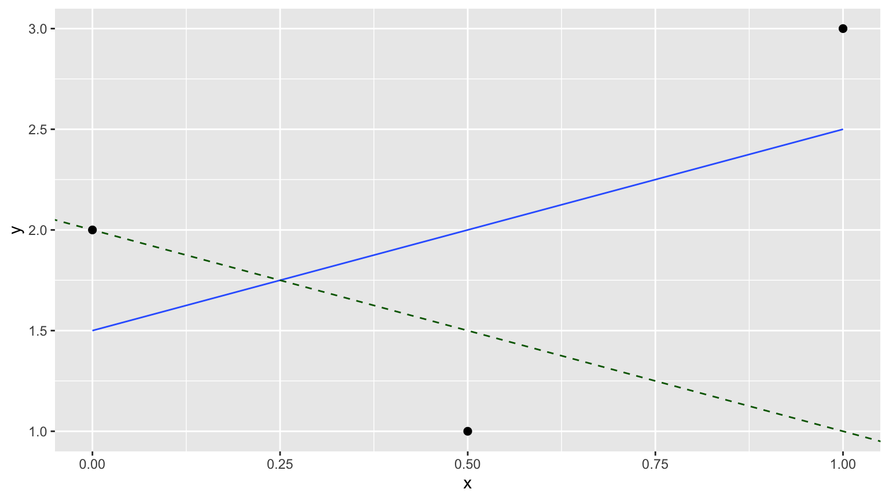

Schedule
Lec 39: Fri 4/29
No lecture: Online office hours instead
Lec 38: Wed 4/27
Announcements
- Midterms
- Go over Midterm III
- Be sure to read Midterm IV
info
- Be sure to check that all your proficiency scores on Moodle under
Grades are correct
- Office hours
- Online: Friday during lecture time
- Exam week office hours posted on calendar in Syllabus
- Unlike textbooks that students often sell at the end of the
semester, ModernDive will always be available at moderndive.com
Closing notes
- See Slack
#general
- Reflection on standards-based grading and how semester went
- Time for course evals
- Thank you to Beth Brown and all Spinelli Tutors
- Congrats to all seniors
Lec 37: Mon 4/25
No lecture
Lec 36: Fri 4/22
Announcements
- Discussion on what we’ll cover next week
Today’s Topics/Activities
1. Chalk talk
- (If anything remains from Lec 35) LINE conditions required for
theory/formula-based regression SE, HT, and CI to be valid:
- Linearity of relationship between variables
- Independence of the residuals
- Normality of the residuals
- Equality of variance of the residuals
- Simulation-based inference for population regression slope \(\beta_1\) with
infer framework
(as opposed to R’s regression tables which are based on
theory/formula-based approach)
2. In-class exercise
- Go over ModernDive reading in schedule above, which you need to
complete before next lecture.
- You do not need to submit the answers of all Learning Checks; they
are meant for your practice. The solutions to all Learning Checks can be
found in Appendix D of ModernDive.
Lec 35: Wed 4/20
Announcements
- Anecdote about Harvard and UC Berkeley
- Don’t forget about video lectures recorded during pandemic for
select topics! In far-right column in schedule above.
- Midterm IV during finals week information posted
- Resubmission phase of final project
- Instructions posted
- Basic principle: minimize ink to information ratio
Today’s Topics/Activities
1. Chalk talk
- Interpreting remaining columns of a regression table: standard
error, (test) statistic, p-value, (95%) confidence interval
- How are values in table computed? Not via simulations (like with
infer) but using theory/formula-based approach.
- (As much as we can get done today) LINE conditions required for
theory/formula-based regression SE, HT, and CI to be valid:
- Linearity of relationship between variables
- Independence of the residuals
- Normality of the residuals
- Equality of variance of the residuals
2. In-class exercise
- Go over ModernDive reading in schedule above, which you need to
complete before next lecture.
- You do not need to submit the answers of all Learning Checks; they
are meant for your practice. The solutions to all Learning Checks can be
found in Appendix D of ModernDive.
Lec 34: Mon 4/18
Announcements
- Discussion about Midterm III posted
- By Wednesday:
- Instructions for final phase of final project posted
- Feedback delivered
- Repeat announcement: SDS Focus Group
Today’s Topics/Activities
1. Chalk talk
- Sampling scenario 4: Difference in population means \(\mu_1 - \mu_2\)
- Theory-based hypothesis tests
- t-tests
- Fig 9.22 compares theory-based approach and simulation-based
approach
- Controversy around p-values
- Starting ModernDive Chapter 10: Inference for regression (Learning
Goals 14 & 15 in blue)
- Refresher of simple linear regression: Fig 10.1 and Table 10.1
- Sampling scenario 5: Population regression slope \(\beta_1\)
2. In-class exercise
- Go over ModernDive reading in schedule above, which you need to
complete before next lecture.
- You do not need to submit the answers of all Learning Checks; they
are meant for your practice. The solutions to all Learning Checks can be
found in Appendix D of ModernDive.
Lec 33: Fri 4/15
Announcements
- SDSCC announcement in Slack
#random: Alumni speed
networking
Today’s Topics/Activities
1. Chalk talk
- Interpreting hypothesis tests:
- Pre-determined \(\alpha\)-significance level: false positive
rate you’re willing to tolerate
- Two possible outcomes of HT
- Two types of incorrect decisions. Analogous to COVID test
- How do we choose \(\alpha\)
2. In-class exercise
- Go over ModernDive reading in schedule above, which you need to
complete before next lecture.
- You do not need to submit the answers of all Learning Checks; they
are meant for your practice. The solutions to all Learning Checks can be
found in Appendix D of ModernDive.
Lec 32: Wed 4/13
Announcements
- SDS will be having a focus group on Diversity, Equity, and Inclusion
(DEI) in SDS on Wednesday, 4/20 at 12:15 PM in McConnell 103. This event
will also be cosponsored by Smithies in SDS and SDSCC. Anyone who in an
SDS major/minor or has taken a class is welcome to join, and the first
half will be moderated by faculty, while SSDS and SDSCC student liaisons
will take over the rest.
Today’s Topics/Activities
1. Chalk talk
- Originally skipped in Lec 28: MD 8.7.2 (LG 11)
- Theory-based method for computing standard errors (instead of
simulations): PS07 Q10 table
- Theory-based method for constructing confidence intervals (instead
of simulations): Assuming normality
- Only handout for the semester: Example relevant to LG7, LG8, and LG9 on sampling:
accuracy vs precision and representativeness in the statistical sense,
sampling methodology, bias
Lec 31: Mon 4/11
Today’s Topics/Activities
1. Chalk talk
- Discussion on Midterm II
- Conducting hypothesis testing with the
infer
package
2. In-class exercise
- Go over ModernDive reading in schedule above, which you need to
complete before next lecture.
- You do not need to submit the answers of all Learning Checks; they
are meant for your practice. The solutions to all Learning Checks can be
found in Appendix D of ModernDive.
Lec 30: Fri 4/8
Announcements
- Copy code below into your
classnotes.Rmd. It loads the
data from the Google Sheet you filled in last lecture
Today’s Topics/Activities
1. Chalk talk
- Putting terminology and a framework describing what you just
did
- Fig 9.9:
infer package for hypothesis testing
library(tidyverse)
# Load data:
resumes <-
"https://docs.google.com/spreadsheets/d/e/2PACX-1vTlmubr007CcPwa3j-w1CydqNAQkq_cqA-QNxnjpSFno7OjCi8lW0noTgVM1-Fn9mtZ29DYd7PaC32I/pub?gid=1948991627&single=true&output=csv" %>%
read_csv()
# View(resumes)
# You don't need to understand what this code is doing for this course:
resumes <- resumes %>%
slice(n()) %>%
select(-c(person, decision, observed_gender)) %>%
.[1, ]%>%
as.numeric() %>%
tibble(diff_m_minus_f = . )
# Visualize distribution of male - female differences:
ggplot(resumes, aes(x = diff_m_minus_f)) +
geom_histogram(binwidth = 0.1) +
labs(x = "Difference in prop promoted: male - female") +
geom_vline(xintercept = 0.292, col = "red", size = 2)
2. In-class exercise
- Don’t forget to do the readings for Lec 29.
- Go over ModernDive reading in schedule above, which you need to
complete before next lecture.
- You do not need to submit the answers of all Learning Checks; they
are meant for your practice. The solutions to all Learning Checks can be
found in Appendix D of ModernDive.
Lec 29: Wed 4/6
Today’s Topics/Activities
1. Chalk talk
- In-class tactile activity for Chapter 9 on Hypothesis Testing:
- Describe promotions at bank experiment
- Observed numerical results
- Are these results (statistically) significant i.e. there IS
gender-based discrimination, or could it have been by chance?
- In a “hypothetical universe” of no gender-based discrimination…
- Permutations (shuffling) using a deck of cards (Fig 9.2): resampling
without replacement (don’t put cards back)
2. In-class exercise
- Go over ModernDive reading in schedule above, which you need to
complete before next lecture.
- You do not need to submit the answers of all Learning Checks; they
are meant for your practice. The solutions to all Learning Checks can be
found in Appendix D of ModernDive.
Lec 28: Mon 4/4
Announcements
- Some students still need to take Midterm II, so no discussing it
please.
Today’s Topics/Activities
1. Chalk talk
- Two factors that impact width of confidence interval i.e. size of
net
- Confidence level: Fig 8.29
- Sample size: Fig 8.30
- New sampling scenario in MD 8.6: Difference in population
proportions \(p_1 - p_2\) of two
groups. Is yawning contagious?
- Recap of
infer workflow: Fig 8.21. We’ll use this
framework for Hypothesis Testing (which starts on Wednesday)
2. In-class exercise
- Go over ModernDive reading in schedule above, which you need to
complete before next lecture.
- You do not need to submit the answers of all Learning Checks; they
are meant for your practice. The solutions to all Learning Checks can be
found in Appendix D of ModernDive.
Lec 27: Fri 4/1
Announcements
- Additional notes about Midterm II
- Roadmap of what we have left for final 4 weeks of class
Today’s Topics/Activities
1. Chalk talk
- Re-visit Fig 8.27 from Lec 26: How to interpret 95% confidence
intervals
- Moved to Lec 28 on Mon 4/4:
Two factors that impact width of
confidence interval i.e. size of net
Confidence level: Fig 8.29Sample size: Fig 8.30
2. In-class exercise
- Go over ModernDive reading in schedule above, which you need to
complete before next lecture.
- You do not need to submit the answers of all Learning Checks; they
are meant for your practice. The solutions to all Learning Checks can be
found in Appendix D of ModernDive.
Lec 26: Wed 3/30
Announcements
- Instructions for next (shorter) phase of final project are posted.
- There are 13 midterms (450 students) this weekend. Self Scheduled
Exams organizers expect a lot of traffic on Sunday afternoon.
Today’s Topics/Activities
1. Chalk talk
- Revisiting bowl sampling exercise (note bowl in book is from Amherst
College)
- Comparing 95% to 80% confidence intervals Fig 8.27 vs Fig 8.28
- Correct interpretation of CI’s
- Moved to Lec 28 on Mon 4/4:
Two factors that impact width of
confidence interval i.e. size of net
Confidence level: Fig 8.29Sample size: Fig 8.30
2. In-class exercise
- Go over ModernDive reading in schedule above, which you need to
complete before next lecture.
- You do not need to submit the answers of all Learning Checks; they
are meant for your practice. The solutions to all Learning Checks can be
found in Appendix D of ModernDive.
Lec 25: Mon 3/28
Announcements
- Added new optional “Resource: Video lecture” column to Google Sheet
schedule above: Video chalk talks from Spring 2020 pandemic
semester.
- Final project
- Watch video EDA feedback
- Instructions will be updated on Project page by Wednesday
- The last step of EDA phase ties into Learning Goal 06 on Midterm II:
Multiple regression via interaction and parralel slopes model
Today’s Topics/Activities
1. Chalk talk
- Constructing confidence intervals using
infer package
(instead of rep_sample_n())
2. In-class exercise
- Go over ModernDive reading in schedule above, which you need to
complete before next lecture.
- You do not need to submit the answers of all Learning Checks; they
are meant for your practice. The solutions to all Learning Checks can be
found in Appendix D of ModernDive.
Lec 24: Fri 3/25
Announcements
- Gradebook on Moodle updated with Learning Goal proficiencies from Midterm I.
- Extension requests will be processed within 24h, usually by the
morning after the original due date.
Today’s Topics/Activities
1. Chalk talk
- Recap of Lec 23: MD Figure 8.14
- MD Ch 8.7.2 touches on Learning Goal 10: Comparing sampling vs
bootstrap distributions
- The thinking behind confidence intervals (CI): Fig 8.15
- Revisit Obama poll from Ch 7.4
- Two methods for constructing CI’s
2. In-class exercise
- Go over ModernDive reading in schedule above, which you need to
complete before next lecture.
- You do not need to submit the answers of all Learning Checks; they
are meant for your practice. The solutions to all Learning Checks can be
found in Appendix D of ModernDive.
Lec 23: Wed 3/23
Announcements
- You’ll get project feedback by Monday
- Talk about Midterm I
- In Slack
#general: Smithies in SDS Data Ethics event on
2022/4/14 5pm with Dr. Emily Bender. Read more about her work here.
- Copy code below into your
classnotes.Rmd. It loads the
data from the Google Sheet you filled in last lecture
library(tidyverse)
# Load data and do minor data wrangling:
pennies <-
"https://docs.google.com/spreadsheets/d/e/2PACX-1vTlmubr007CcPwa3j-w1CydqNAQkq_cqA-QNxnjpSFno7OjCi8lW0noTgVM1-Fn9mtZ29DYd7PaC32I/pub?gid=101369328&single=true&output=csv" %>%
read_csv() %>%
select(group, group_average)
# Each row does not represent an individually resampled penny, rather each group's
# pre-summarized mean year:
View(pennies)
# Plot the bootstrap distribution:
ggplot(pennies, aes(x=group_average)) +
geom_histogram(binwidth = 2) +
labs(
x = "Average year",
title = "Bootstrap distribution for 18 groups' 50 pennies resampled with replacement",
subtitle = "Vertical red line is sample mean of original sample of 50 pennies"
) +
geom_vline(xintercept = 1995.44, col = "red")
Today’s Topics/Activities
1. Chalk talk
- Goal for this chapter: Table 8.1
- Go over
classnotes.Rmd Lec 23 code
- What in-class tactile exercises have we done so far?
- Chapter 7: In-class we took 42 samples from bowl to create sampling
distribution (See
classnotes.Rmd Lec 19 code). IRL however
you don’t take many samples, you sample only once.
- Chapter 8: In-class we only have 1 sample of 50 pennies from back.
We can’t create sampling distribution. Rather, we approximate with the
bootstrap method. Copy code below into
classnotes.Rmd Lec
23 code.
- Today we mimic the pennies exercise virtually with 1000 simulations
to build Fig 8.14
2. In-class exercise
- Go over ModernDive reading in schedule above, which you need to
complete before next lecture.
- You do not need to submit the answers of all Learning Checks; they
are meant for your practice. The solutions to all Learning Checks can be
found in Appendix D of ModernDive.
Lec 22: Mon 3/21
Announcements
- Re-visit learning goals
Today’s Topics/Activities
1. Chalk talk
- Example of CLT for non-normal population distributions here
- Next tactile activity: re-sampling with replacement from a sample of
\(n=50\) pennies (Google Sheet)
2. In-class exercise
- Go over ModernDive reading in schedule above, which you need to
complete before next lecture.
- You do not need to submit the answers of all Learning Checks; they
are meant for your practice. The solutions to all Learning Checks can be
found in Appendix D of ModernDive.
Lec 21: Fri 3/11
Announcements
- Revisit learning goals: the importance of chapter 7 on sampling
- Midterm I discussion
Today’s Topics/Activities
1. Chalk talk
- Finish sampling framework from Lec 20: terminology, notations and
definitions
- Statistical definitions: sampling distribution & standard
error
- Obama poll in MD 7.4
- Central Limit Theorem: Watch bunny and dragon video
- Table 7.6.1 of all population parameters we’re going to infer
about
2. In-class exercise
- Go over ModernDive reading in schedule above, which you need to
complete before next lecture.
- You do not need to submit the answers of all Learning Checks; they
are meant for your practice. The solutions to all Learning Checks can be
found in Appendix D of ModernDive.
Lec 20: Wed 3/9
Announcements
- What is “hump day”?
- Project EDA due tomorrow 9pm
Today’s Topics/Activities
1. Chalk talk
- Recap of Lec 19 readings, go over:
- Sampling exercise data on this Google Sheet can be loaded using code below. Copy to
classnotes.Rmd:
library(tidyverse)
sampling_data <-
"https://docs.google.com/spreadsheets/d/e/2PACX-1vTlmubr007CcPwa3j-w1CydqNAQkq_cqA-QNxnjpSFno7OjCi8lW0noTgVM1-Fn9mtZ29DYd7PaC32I/pub?gid=0&single=true&output=csv" %>%
read_csv()
sampling_data <- sampling_data %>%
mutate(prop_red = number_of_red_balls/50)
ggplot(sampling_data, aes(x = prop_red)) +
geom_histogram(binwidth = 0.04) +
labs(x = "Proportion of balls that are red")
- Code from Ch 7.2.1 (below Fig 7.8). Copy to
classnotes.Rmd:
library(tidyverse)
library(moderndive)
# Segment 1: sample size = 25 ------------------------------
# 1.a) Virtually use shovel 1000 times
virtual_samples_25 <- bowl %>%
rep_sample_n(size = 25, reps = 1000)
# 1.b) Compute resulting 1000 replicates of proportion red
virtual_prop_red_25 <- virtual_samples_25 %>%
group_by(replicate) %>%
summarize(red = sum(color == "red")) %>%
mutate(prop_red = red / 25)
- Fig 7.9
- Table 7.1
- Sampling framework: terminology, notations and definitions
2. In-class exercise
- Go over ModernDive reading in schedule above, which you need to
complete before next lecture.
- You do not need to submit the answers of all Learning Checks; they
are meant for your practice. The solutions to all Learning Checks can be
found in Appendix D of ModernDive.
Lec 19: Mon 3/7
Announcements
- Midterm I: Extra Self Scheduled Exam window scheduled by Science
Center this week only: Wed 3/9 4-9pm. Staff will be available to hand
out printed exams during this window and quiet rooms will be setup.
- SDS Presentation of the Major Tue 3/22 (after break). Undeclared
majors and minors can attend in-person. If you’d like a grab-n-go lunch,
please register in advance.
Today’s Topics/Activities
1. Chalk talk
- In-class tactile (hands-on) activity.
- Guess the proportion of balls in the bowl that are red in this Google Sheet
- Enter the number of balls in your shovel that are red (out of 50) in
this Google Sheet
- Mimicking sampling virtually on computer
2. In-class exercise
- Do ModernDive readings for Wed 2022/3/2 Lec 17 (model selection) as
well as today’s.
- You do not need to submit the answers of all Learning Checks; they
are meant for your practice. The solutions to all Learning Checks can be
found in Appendix D of ModernDive.
Lec 18: Fri 3/4
Announcements
- Midterm discussion
Today’s Topics/Activities
1. Chalk talk
- Random assignment for causal inference
2. In-class exercise
None
Lec 17: Wed 3/2
Announcements
- Added cheat sheet policy to Midterm
I
- Message in Slack
#general: What are Shiny Apps?
- Discuss project EDA phase of final
project:
- Download
final_project.Rmd from Moodle
- Join the
#final_project channel on Slack
Today’s Topics/Activities
1. Chalk talk
Revisit Africa data in terms of learning goals for Midterm I: Put
code in classnotes.Rmd
library(readr)
library(dplyr)
library(ggplot2)
library(moderndive)
africa <- read_csv("https://rudeboybert.github.io/SDS220/static/africa_results_2022.csv")
# 1. Regression with one numerical x
# 1.a) EDA
ggplot(data = africa, mapping = aes(x = height, y = countries_in_africa)) +
geom_point() +
geom_smooth(method = "lm", se = FALSE) +
labs(x = "Height", y = "Number of countries guessed", title = "Africa survey")
# 1.b) Fit model and get regression table
africa_model_num_x <- lm(countries_in_africa ~ height, data = africa)
get_regression_table(africa_model_num_x)
# 2. Regression with one categorical x
# 2.a) EDA
ggplot(data = africa, mapping = aes(x = group, y = countries_in_africa)) +
geom_boxplot() +
labs(x = "Group", y = "Number of countries guessed", title = "Africa survey")
# 2.b) Fit model and get regression table
africa_model_cat_x <- lm(countries_in_africa ~ group, data = africa)
get_regression_table(africa_model_cat_x)
Model selection using visualizations. In particular, choosing
between the interaction and parallel slopes models by comparing
- Figure 6.7 for UT Austin data
- Figure 6.8 for Massachusetts high school data
2. In-class exercise
- Go over ModernDive reading in schedule above, which you need to
complete before next lecture.
- You do not need to submit the answers of all Learning Checks; they
are meant for your practice. The solutions to all Learning Checks can be
found in Appendix D of ModernDive.
Lec 16: Mon 2/28
Announcements
- Self-schedule Seelye Midterm I this weekend. See Midterms tab
- Next phase of project “Project EDA” assigned on Wednesday
Today’s Topics/Activities
1. Chalk talk
- Recap of Lec 15: Interaction models are one type of multiple
regression model for \(x_1\) numerical
and \(x_2\) categorical (with \(k\) levels/groups).
- Parallel slopes models are another type of model.
2. In-class exercise
- Go over ModernDive reading in schedule above, which you need to
complete before next lecture.
- You do not need to submit the answers of all Learning Checks; they
are meant for your practice. The solutions to all Learning Checks can be
found in Appendix D of ModernDive.
Lec 15: Fri 2/25
Cancelled: Snow day
Lec 14: Wed 2/23
Today’s Topics/Activities
1. Chalk talk
- Multiple regression for \(y\) as a
function of two explanatory/predictor variables:
- \(x_1\) numerical
- \(x_2\) categorical
- First type of multiple regression model: interaction model. What is
an interaction effect?
- Using teaching
evals data from Chapter 5 again:
- Figure 6.1: EDA Visualization of interaction model
- Table 6.2: Regression table of coefficients for interaction
model
- Equation for fitted values \(\hat{y}\)
- Table 6.4: Intercepts and slopes of regression line for both genders
(recorded as binary at time of study in 2005)
- Interpretation of results
2. In-class exercise
- Go over ModernDive reading in schedule above, which you need to
complete before next lecture.
- You do not need to submit the answers of all Learning Checks; they
are meant for your practice. The solutions to all Learning Checks can be
found in Appendix D of ModernDive.
Lec 13: Mon 2/21
Today’s Topics/Activities
1. Chalk talk
More on regression using a categorical explanatory/predictor variable
\(x\). Reusing
categ_regression_ex code example from Lec12:
- Write out equation for fitted value \(\hat{y}\) using indicator functions
- Computing all fitted values and residuals by hand
- Re-using code example from Lec12, apply
get_regression_points() function (additional code is posted
below in Lec12)
2. In-class exercise
- Go over ModernDive reading in schedule above, which you need to
complete before next lecture.
- You do not need to submit the answers of all Learning Checks; they
are meant for your practice. The solutions to all Learning Checks can be
found in Appendix D of ModernDive.
Lec 12: Fri 2/18
Announcements
- See Slack
#general: Newest SDS faculty Shiya Cao visit
today
Today’s Topics/Activities
1. Chalk talk
- Lec 11 in-class exercise: sum of squared residuals computation of
dashed black line
- Regression with a categorical predictor variable. Copy the following
code into your
classnotes.Rmd that creates a data frame
called categ_regression_ex with 9 rows and 2 variables:
- A numerical outcome variable \(y\)
=
value
- An categorical explanatory variable \(x\) =
name with 3 levels:
Bert, Flo, Ivy.
library(ggplot2)
library(dplyr)
library(moderndive)
categ_regression_ex <- tibble(
name = c("Bert", "Bert", "Bert", "Flo", "Flo", "Flo", "Ivy", "Ivy", "Ivy"),
value = c(9, 10, 11, 11, 12, 13, 8, 9, 10)
)
categ_regression_ex
# Code we typed during Lec12 to view regression table:
# Step 1: Fit and save model
categ_model <- lm(value ~ name, data = categ_regression_ex)
# Step 2: Output regression table
get_regression_table(categ_model)
# Code we typed during Lec13 to view information on all 9 points
# where:
# value = y outcome variable
# name = x explanatory variable (categorical)
# value_yat = y_hat fitted values (group/category means)
# residual = y - y_hat errors
get_regression_points(categ_model)
2. In-class exercise
- Go over ModernDive reading in schedule above, which you need to
complete before next lecture.
- You do not need to submit the answers of all Learning Checks; they
are meant for your practice. The solutions to all Learning Checks can be
found in Appendix D of ModernDive.
Lec 11: Wed 2/16
Announcements
- If you need a project group fill out the Google Form found on the Project page by 5pm today.
Today’s Topics/Activities
1. Chalk talk
- PS02 Q11: Skew
- Correlation is not necessarily causation:
- Spurious correlations
- What are X = treatment, Y = response, and Z = confounding
variables?
- What are causal graphs?
- Recall
simple_regression_ex
- Draw the 3 points and the “best-fitting” regression line in
blue.
- Draw the 3 fitted values \(\widehat{y}\) using the equation for the
regression line \(\widehat{y} = b_0 + b_1\cdot
x\)
- Draw the 3 residuals \(y -
\widehat{y}\)
- Compute the sum of squared residuals for this line.

2. In-class exercise
- Repeat sum of squared errors calculation for dashed black line, show
the value is “worse” i.e. bigger than the value for the blue regression
line.
- Go over ModernDive reading in schedule above, which you need to
complete before next lecture.
- You do not need to submit the answers of all Learning Checks; they
are meant for your practice. The solutions to all Learning Checks can be
found in Appendix D of ModernDive.
Lec 10: Mon 2/14
Announcements
- Slack announcement about SDSCC
- Revisit learning goals
- Project proposal posted
- Answer previous question
Today’s Topics/Activities
1. Chalk talk
Consider the following 3 points saved in a data frame called
simple_regression_ex.
We display the regression table. This is done in two
steps:
# Step 1: Fit regression model
model_ex <- lm(y ~ x, data = simple_regression_ex)
# Step 2: Get regression table
get_regression_table(model_ex)
2. In-class exercise
- Go over ModernDive reading in schedule above, which you need to
complete before next lecture.
- You do not need to submit the answers of all Learning Checks; they
are meant for your practice. The solutions to all Learning Checks can be
found in Appendix D of ModernDive.
Lec 09: Fri 2/11
Announcements
- First phase of project released on Monday: Project proposal due Thu
2/24
- Choose groups of 2-3 students, ideally in same lab section
- Choose from a basket of datasets
- Keyboard shortcut for
%>%:
- macOS: Command + Shift + M
- Windows: Control + Shift + M
Today’s Topics/Activities
1. Chalk talk
- For ModernDive Ch5 you need to install some new packages, including
the
tidyverse package
- Normal distribution
- Correlation coefficient:
- Definition
- Examples
- Play “guess the correlation” game
- Regression line:
- Outcome/response \(y\) and
explanatory/predictor variables \(x\)
- Teaching evaluations
2. In-class exercise
- Go over ModernDive reading in schedule above, which you need to
complete before next lecture.
- You do not need to submit the answers of all Learning Checks; they
are meant for your practice. The solutions to all Learning Checks can be
found in Appendix D of ModernDive.
Lec 08: Wed 2/9
Announcements
Today’s Topics/Activities
1. Chalk talk
Using same fruit_basket example from chalk talk in Lec
07:
- “Summary functions” are many-to-one functions to compute “summary
statistics,” like
mean() & median()
- Using summary functions to then
summarize() rows
- Setting “group meta-data” of a data frame using
group_by(), then summarize() rows. In other
words, group_by() by itself does not change the “data”,
rather only the “meta-data”
mutate() new variables from existing variables: price
in cents
2. In-class exercise
- Go over ModernDive reading in schedule above, which you need to
complete before next lecture.
- You do not need to submit the answers of all Learning Checks; they
are meant for your practice. The solutions to all Learning Checks can be
found in Appendix D of ModernDive.
Lec 07: Mon 2/7
Today’s Topics/Activities
1. Chalk talk
- Finish data visualization
- Recap 3 data visualizations
- Note about boxplots: width/height of the box = IQR = measure of
spread
- How to add labels to a
ggplot() with
labs()
- Data wrangling
- Define the “pipe operator”
%>%, pronounced
then
- Logical AKA boolean operators in computer programming
filter() rows that match a criteria- Example data frame we’ll use is
fruit_basket
Posted after lecture: In case you want to run the
chalk talk example on your computer:
# Create fruit_basket data frame from scratch
# (we won't do this much in this class)
library(tibble)
fruit_basket <- tibble(
type = c("mango", "kiwi", "mango", "grape", "grape", "mango"),
price = c(2, 3, 1, 3, 1, 3)
)
# Filter the basket only for grapes
library(dplyr)
grape_basket <- fruit_basket %>%
filter(type == "grape")
# View contents of grapes
grape_basket
2. In-class exercise
- Go over ModernDive reading in schedule above, which you need to
complete before next lecture.
- You do not need to submit the answers of all Learning Checks; they
are meant for your practice. The solutions to all Learning Checks can be
found in Appendix D of ModernDive.
Lec 06: Fri 2/4
Cancelled: Snow day
Lec 05: Wed 2/2
Announcements
- At the beginning of every lecture you should have the following
open:
- This webpage
- ModernDive
- Slack team for this course
- RStudio
- Install the
readr package
- Spinelli Center drop-in tutoring information posted in syllabus
- Recap of
classnotes.Rmd: where you can save all code
from all in-class exercises
- Recap in-class activity based on student ID numbers from last
lecture
Today’s Topics/Activities
1. Chalk talk
We want to visualize the distribution of the following 12 values with
a boxplot: 1, 3, 5, 6, 7, 8, 9, 12, 13, 14, 15, 30. They have the
following summary statistics (a single numerical value
summarizing many values):
- Quartiles (1st, 2nd, and 3rd) that cut up the data into 4 parts,
each containing roughly one quarter = 25% of the data:
- 1st quartile: 5.5
- 2nd quartile = median: 8.5
- 3rd quartiles: 13.5
- Interquartile-range (IQR): the distance between the 3rd and 1st
quartiles:
- 8 = 13.5 - 5.5
2. In-class exercise
- Go over ModernDive reading in schedule above, which you need to
complete before next lecture.
- You do not need to submit the answers of all Learning Checks; they
are meant for your practice. The solutions to all Learning Checks can be
found in Appendix D of ModernDive
- At 11:55am: Continue Africa activity
Lec 04: Mon 1/31
Announcements
- At the beginning of every lecture you should have the following
open:
- This webpage
- ModernDive
- Slack team for this course
- RStudio
Today’s Topics/Activities
1. Chalk talk
- Mega-mega fun times in-class activity
- Draw histogram by hand, emphasizing that bins correspond to
intervals (right-edge inclusive).
- Adjust the binning structure of the previous hand-drawn histogram
two ways:
- Adjusting the binwidth
- Adjusting the number of bins
- Facets split one graphic by the values of another variable (that
does not have too many unique values).
2. In-class exercise
- Go over ModernDive reading in schedule above, which you need to
complete before next lecture.
- You do not need to submit the answers of all Learning Checks; they
are meant for your practice. The solutions to all Learning Checks can be
found in Appendix D of ModernDive
Lec 03: Fri 1/28
Announcements
- Show example of thread in
#questions on Slack.
- The Smith College CS Department Liaisons’ Software
Install Fair is today 2pm-4:30pm, especially if you want help
installing RStudio Desktop
- Lecture recording:
- Lecture
notes
Today’s Topics/Activities
1. Chalk talk
- Draw scatterplot by hand
- Define the Grammar of Graphics
- Write example
ggplot() code
- Setting up a
classnotes.Rmd R Markdown file for the
in-class exercises. This follows exactly what you did for Lab01 on Thu
1/27.
2. In-class exercise
- Go over ModernDive reading in schedule above, which you need to
complete before next lecture.
- Today’s reading is “2 - 2.3.1”, which means the start of Chapter 2
up to and including 2.3.1. In other words you don’t need to read
2.3.2.
- You do not need to submit the answers of all Learning Checks; they
are meant for your practice. The solutions to all Learning Checks can be
found in Appendix D of ModernDive
Lec 02: Wed 1/26
Announcements
- Waitlist: Fill out Google Form on Moodle by 1pm. I will start
admitting people this afternoon.
- Labs and problem sets:
- First lab with Beth Brown tomorrow using same Zoom link.
- All labs and problem sets are going to be posted on Moodle (not this
webpage)
- All problem sets will be due on Gradescope at
5pm 9pm so
that you can visit Spinelli drop-in tutoring hours one last time.
- First problem set (Intro survey, syllabus quiz, practice tagging
individual questions on Gradescope) is due tomorrow, Thu 1/27 at
9pm.
- The Smith College CS Department Liaisons will be holding a Software
Install Fair on Fri Jan 28 2pm-4:30pm.
- Lecture recording
- Lecture
notes
Today’s Topics/Activities
1. Chalk talk
- R vs RStudio
- RStudio server rstudio.smith.edu vs RStudio Desktop (see note about
Software Install Fair this Friday above)
- R packages
2. In-class exercise
- Go over ModernDive reading in schedule above, which you need to
complete before next lecture.
- You do not need to submit the answers of all Learning Checks; they
are meant for your practice. The solutions to all Learning Checks can be
found in Appendix D of ModernDive
Lec 01: Mon 1/24
- Go over TODO list posted on Moodle
- Lecture recording (started a little late,
apologies)